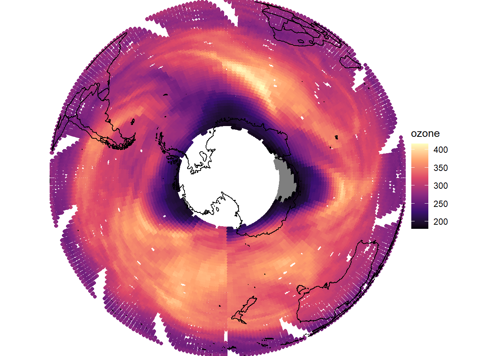
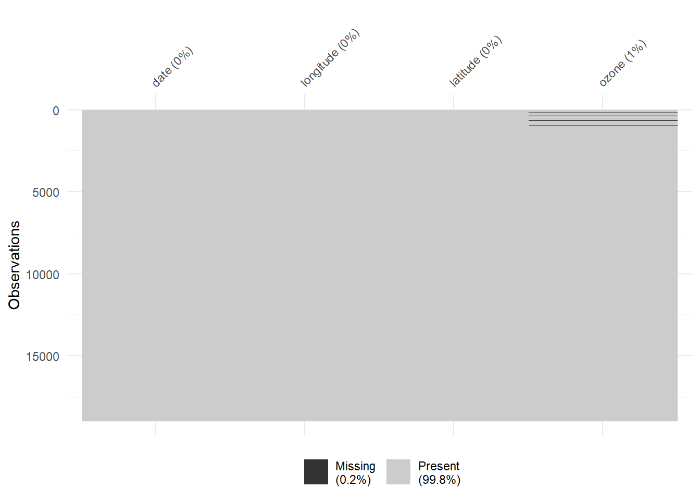
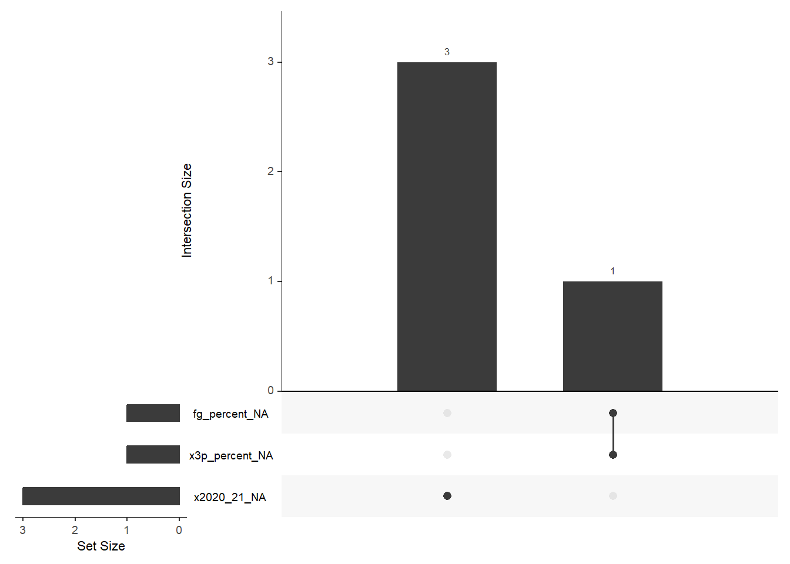

Importing data may seem simple, but if the data is messy it can create problems in the analysis side of things. We are going to observe efficient methods to import data stored in a flat file format. Flat file formats are one of the most common formats for saving data because flat files can be read by a large variety of data related software. Flat file formats include Comma Separated Values (csv’s), tab delimited files, fixed width files and more.
readr
The readr R package contains simple, consistent functions for importing data saved as flat file documents. readr functions offer an alternative to base R functions that read in flat files. Compared to base R’s read.table() or read.csv() and its derivatives, readr functions have several advantages. readr functions:
are ~10 times faster
return user-friendly tibbles
have more intuitive defaults
easily handle messy or missing data
readr supplies several related functions, each designed to read in a specific flat file format.
Function
Reads
read_csv()
Comma separated values
read_csv2()
Semi-colon separate values
read_delim()
General delimited files
read_fwf()
Fixed width files
read_log()
Apache log files
read_table()
Space separated files
read_tsv()
Tab delimited values
Here, we will focus on the read_csv() function, but the other functions work in a similar way. In most cases, you can use the syntax and arguments of read_csv() when using the other functions listed above.
readr is a core member of the tidyverse. It is loaded everytime you call library(tidyverse).
Sample data
A sample data set to import is saved alongside this notebook. The data set, saved as nimbus.csv, contains atmospheric ozone measurements of the southern hemisphere collected by NASA’s NIMBUS-7 satellite in October 1985. The data set is of historical interest because it displays evidence of the hole in the ozone layer collected shortly after the hole was first reported.
Importing Data
To import nimbus.csv, use the readr functions that reads .csv files, read_csv(). Set the first argument of read_csv() to a character string: the file path from your working directory to the nimbus.csv file.
Your Turn 1
Save nimbus.csv into your project folder on your computer. Then read it into an object. Then view the results.
nimbus <-read_csv("nimbus.csv")
Rows: 18963 Columns: 4
── Column specification ────────────────────────────────────────────────────────
Delimiter: ","
chr (1): ozone
dbl (2): longitude, latitude
dttm (1): date
ℹ Use `spec()` to retrieve the full column specification for this data.
ℹ Specify the column types or set `show_col_types = FALSE` to quiet this message.
Notice that the code above saves the output to an object named nimbus. You must save the output of read_csv() to an object if you wish to use it later. If you do not save the output, read_csv() will merely print the contents of the data set at the command line.
Tibbles
read_csv() reads the data into a tibble, which is a special class of data frame. Since a tibble is a sub-class of data frame, R will in most cases treat tibbles in exactly the same way that R treats data frames.
There is however, one notable exception. When R prints a data frame in the console window, R attempts to display the entire contents of the data frame. This has a negative effect: unless the data frame is very small you are left viewing the end of the data frame (or if the data frame is very large, the middle of the data frame since R stops displaying new rows after a maximum number is reached).
R will display tibbles in a much more sensible way. If the tibble package is loaded, R will display the first ten rows of the tibble and as many columns as will fit in your console window. This display ensures that the name of each column is visible in the display.
tibble is a core member of the tidyverse. It is loaded every time you call library(tidyverse). The tibble package includes the functions tibble() and tribble() for making tibbles from scratch, as well as as_tibble() and as.data.frame() for converting back and forth between tibbles and data frames.
In almost every case, you can ignore whether or not you are working with tibbles or data frames, but occasioannly a function might require one or the other (you will get an error that indicates that).
Parsing NA’s
If you examine nimbus closely, you will notice that the initial values in the ozone column are .. Can you guess what . stands for? The compilers of the nimbus data set used . to denote a missing value. In other words, they used . in the same way that R uses the NA value.
If you’d like R to treat these . values as missing values (and you should) you will need to convert them to NAs. One way to do this is to ask read_csv() to parse . values as NA values when it reads in the data. To do this add the argument na = "." to read_csv():
Your Turn 2
nimbus <-read_csv("nimbus.csv", na =".")
Rows: 18963 Columns: 4
── Column specification ────────────────────────────────────────────────────────
Delimiter: ","
dbl (3): longitude, latitude, ozone
dttm (1): date
ℹ Use `spec()` to retrieve the full column specification for this data.
ℹ Specify the column types or set `show_col_types = FALSE` to quiet this message.
You can set na to a single character string or a vector (e.g. c(NA, “.” , -99) of character strings. read_csv() will transform every value listed in the na argument to an NA when it reads in the data.
Parsing data types
If you run the code above and examine the results, you may now notice a new concern about the ozone column. The column has been parsed as character strings instead of numbers.
When you use read_csv(), read_csv() tries to match each column of input to one of the basic data types in R. read_csv(0 generally does a good job, but here the initial presence of the character strings . caused read_csv() to misidentify the contents of the ozone column. You can now correct this with R’s as.numeric() function, or you can read the data in again, this time instructing read_csv() to parse the column as numbers.
To do this, add the argument col_types to read_csv() and set it equal to a list. Add a named element to the list for each column you would like to manually parse. The name of the element should match the name of the column you wish to parse. So for example, if we wish to parse the ozone and data column into a specific data type, we would begin by inserting the argument:
Your Turn 3
nimbus <-read_csv("nimbus.csv", na =".",col_types =list(ozone =col_double(),date =col_datetime()))
To complete the code, set ozone equal to one of the functions below, each function instructs read_csv() to parse ozone as a specific type of data.
Type function
Data Type
col_character()
character
col_date()
Date
col_datetime()
POSIXct (date-time)
col_double()
double (numeric)
col_factor()
factor
col_guess()
let readr guess (default)
col_integer()
integer
col_logical()
logical
col_number()
numbers mixed with non-number characters
col_numeric()
double or integer
col_skip()
do not read this column
col_time()
time
In our case, we would use the col_double() function to ensure that ozone is read a as double (that is numeric) column.
The hole in the ozone layer
Now that we have our data, we can use it to plot a picture of the hole in the ozone layer. Note that the “hole” in the ozone layer is the dark regions around the south pole. The actual “hole” in the data is a smaller area centered on the south pole, where the satellite did not take measurements.
# install maps and mapproj# install.packages("maps")# install.packages("mapproj")library(maps)
Warning: package 'maps' was built under R version 4.3.3
Attaching package: 'maps'
The following object is masked from 'package:purrr':
map
library(mapproj)
Warning: package 'mapproj' was built under R version 4.3.3
# loads map of the worldworld <-map_data(map ="world")nimbus |>ggplot() +geom_point(mapping =aes(x = longitude, y = latitude, color = ozone)) +geom_path(data = world,mapping =aes(x = long, y = lat, group = group)) +coord_map(projection ="ortho", orientation =c(-90, 0, 0)) +scale_color_viridis_c(option ="magma") +theme_void()

Missing Data
Knowing what data is missing is important to understanding how much we can trust our data and results! One way to do that is with the package naniar which gives us some easy functions to visualize our missing data.
# install.packages("naniar")library(naniar)
Warning: package 'naniar' was built under R version 4.3.3
For example, let’s observe the missing information in our data:
# note that this function is actually from the `visdat` package# but `naniar` loads that package - this is called a package dependency. vis_miss(nimbus)

From here we can see we are just missing a small amount of data (1%) for the ozone variable.
Writing data
readr also contains functions for saving data. These functions parallel the read functions and each save a data frame or tibble in a specific file format.
Function
Writes
write_csv()
Comma separated values
write_excel_csv()
CSV that you plan to open in Excel
write_delim()
General delimited files
write_file()
A single string, written as is
write_lines()
A vector of strings, one string per line
write_tsv()
Tab delimited values
Your Turn 4
To use a write function, first give it the name of the data frame to save, then give it a filepath from your working directory to the location where you would like to save the file. This filepath should end in the name of the new file. So we can save the clean nimbus data set as a csv in our working directory with
Rows: 18963 Columns: 4
── Column specification ────────────────────────────────────────────────────────
Delimiter: ","
dbl (3): longitude, latitude, ozone
dttm (1): date
ℹ Use `spec()` to retrieve the full column specification for this data.
ℹ Specify the column types or set `show_col_types = FALSE` to quiet this message.
Your Turn 5
Look at the data for salaries, ages, and percent free throws/3 pointers for the Golden State Warriors in 2020-2021. Fix the following issues:
N/A is the na value
there are dollar signs attached to the salaries
there are % symbols attached to the FG% and 3P% variables
Warning: One or more parsing issues, call `problems()` on your data frame for details,
e.g.:
dat <- vroom(...)
problems(dat)
janitor Package
The janitor package can help you clean up the names of your variables to make the more friendly for coding, like using _ instead of spaces in names or converting to lower case for consistency or adding letters before numbers.
To see what data is missing and in what combinations we can look at the following plot which variables have missingness, how much missingness, and their intersection (when multiple variables are missing values for a particular case.)
gg_miss_upset(gsw)

In situations where there is a lot of missing data, it can be helpful to see those values plotted to know what is not being plotted in your data.
Let’s use the built-in dataset airquality. First plot using geom_point(). Notice warning. Now change geom_point() to geom_miss_point().